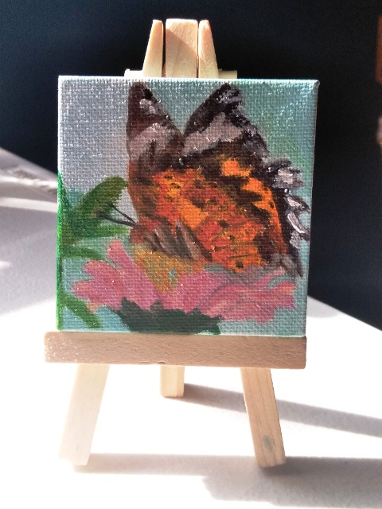
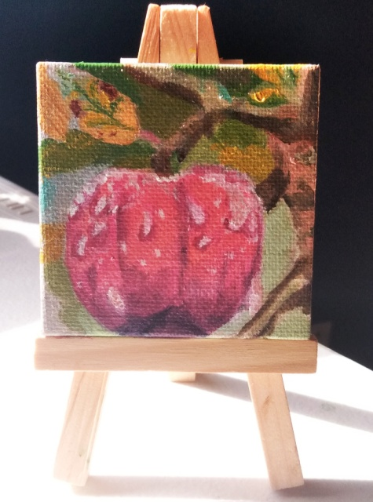
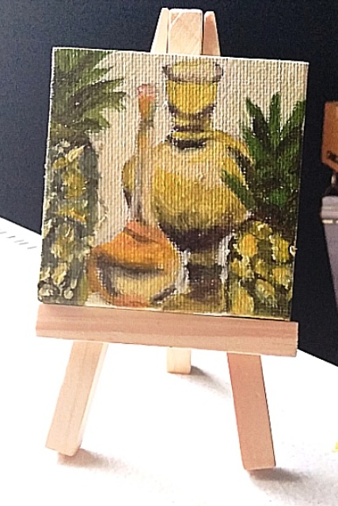

Artist

Welcome to my website. I hope you enjoy the artwork just as much as I enjoyed creating them. Each piece contains a piece of my heart and sentimental value that is deeply embedded in every one of them.
"I incorporate poetry and harmonize nature in Biblical figurative art to give a sense of storytelling. Every story is open to interpretation and is meant to invoke and inspire calm happiness that brings a sense of peace. Life is taken for granted in the large scheme of things and we tend to not appreciate what we have not materially, but internally. The world is immersed in so much negativity and sorrow that everyone needs a glimpse of faith and hope to see that God’s light is present."
- Hannah Quintero

This piece depicts a very fond memory that occurred this year in April. My sister in law’s wedding venue was in a secluded part of San Antonio with a lot of hidden treasures which needed exploration.
There was a particular windmill close to their ceremony to me was absolutely breathtaking in each angle and lighting throughout the day and night. It had a rustic yet elegant emotion attached to it that I just had to capture.

It has been a while since my last post due to a bunch of events going on In April such as prepping for my very first art show and now family events in May. I will update you all later on how that went in a later post! Now on to the third part of my art story segment.
I scaled down my canvas sizes mainly to try out a new art medium, water mixable oil paints. It’s a bit of a contradiction but this conundrum has been satisfying and addicting. My painting experiment has now turned into a painting series of six miniature paintings so far. Each one symbolizes a little piece of something that makes me happy.
...
“Nectar is Fleeting”
Hummingbirds are so free yet fleeting. There’s a lot of them in my husband’s and my yard during the spring and summer.

“Peace In the Night”
The night sky is tranquil and is the time where I am half asleep and half awake. My creativity is most active during this time.
“Fluttering Wings”
Butterflies like in this piece are prevalent as well. They are always seen flitting from flower to flower in our backyard and sometimes even mistaken for flowers themselves.
“Sweetened Dew”
We don’t exactly have apple trees, but we do have a huge fig tree in the front yard. Apples just happen to be one of my favorite fruits.

“Lily in Bloom”
Our backyard has an abundance of pink flowers and this one in particular especially. When the flowers are not in full bloom on the trees, the ground is covered with pink petals.
“Pineapple Still Life”
I wanted to take a bit of a traditional turn with this piece. The intent was to experiment with different yellow hues. There is always a simple elegance when a set up like this is taken a picture of or simply painted.
There was a question posted awhile back on an art page that I participate in asking how one copes with feelings of art is not worth doing because there many other artists. It made me think and really ask myself why I create.
The truth is that I would feel empty without art in my life. It’s part of my essence. Creating art is for myself first before I decide to show it to anyone else. Do what makes your heart and soul sing. When people see that light in you, they’ll gravitate to you like moths to a flame.
God bless you and until next time.